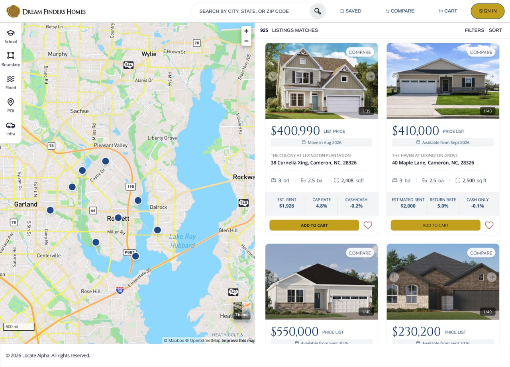

Dreamfinders Custom Marketplace
Designing and building an investor-facing new home marketplace — balancing a prestigious brand identity with WCAG 2.2 AA compliance and a functional shopping experience.

Overview
Custom Marketplace for New Homes
Dream Finders Homes, Inc. is a large homebuilding company with operations across the country, covering everything from designing, building, and selling homes. With new construction home sales falling, they wanted to expand a new investor sales channel with a white-labelled marketplace custom-tailored for investor clients.
The Challenge: The visual style of Dream Finders Homes exudes tradition and prestige — gold wax seal details, grandiose cursive, and serif fonts. However, when blindly applied to a consumer-facing marketplace, these components created competing visual elements and failed WCAG 2.2 AA standards, raising concerns with their legal team and creating potential user experience difficulties.
The Approach: I developed a new end-to-end workflow to simultaneously design a visual system that passes accessibility standards and implement keyboard accessibility features directly in the codebase — using Figma, accessibility audits, Claude Code, and DevTools.

The Challenge
Applying a Client's Design System While Ensuring Compliance
The core tension was preserving the brand's established visual identity — ornate, high-end, traditional — while making it functional and legally compliant for a digital marketplace context.
Brand vs. Usability
Gold-on-white color combinations and decorative serif fonts failed contrast ratio requirements, creating tension between brand fidelity and usability.
WCAG 2.2 AA Failures
Applying the existing style guide directly to UI components produced multiple accessibility violations flagged by the legal team.
Competing Visual Elements
Ornamental brand elements drew attention away from functional UI — search filters, listing cards, and CTAs were visually buried.
Design Approach
Building a Compliant Design System from the Brand Up
Rather than applying the existing style guide wholesale, I audited each brand element through an accessibility lens before incorporating it into the UI. This meant finding compliant color pairings within the brand palette, selecting appropriate type scales from their font family, and reserving ornamental elements for decorative — not functional — contexts.

Accessibility Audit
Auditing in Figma and in Code
I ran a two-phase audit: first in Figma using contrast checkers and annotation plugins to catch failures before development, then in the browser using DevTools and axe to validate the implemented code. This parallel approach caught issues at the design stage — far cheaper to fix than after handoff.
- Color contrast ratios validated for all text, icon, and interactive element combinations
- Focus order and keyboard navigation paths annotated in Figma prior to implementation
- ARIA labels, roles, and landmark structure implemented directly in the codebase
- Final audit run with axe DevTools to confirm zero critical violations

Implementation
From Figma to a Live, Keyboard-Accessible Site
As the sole designer on this project, I worked directly in the codebase to implement accessibility features rather than handing off specs to a developer. I used Claude Code to accelerate keyboard navigation implementation, focus trap logic for modals, and semantic HTML scaffolding — then manually verified each component in the browser.
Figma Design
Full high-fidelity UI with compliant color system, type hierarchy, and annotated accessibility specs.
Frontend Code
Semantic HTML, ARIA attributes, and keyboard navigation implemented directly — no handoff gap.
Accessibility Reports
Documented pre- and post-fix audit results to satisfy legal review and serve as a reference for future sprints.
Live Site
Published and verified end-to-end — from keyboard tab order to screen reader announcements.
Reflection
Designing Within Constraints Sharpens Decision-Making
Accessibility as a Design Constraint, Not an Afterthought
Running the audit before development — at the Figma stage — saved significant rework. Every decision about color, typography, and interactive states had to be justified against the WCAG spec, which forced more intentional design choices across the board.
Working in Code as a Designer
Implementing accessibility features directly in the codebase gave me a clearer understanding of what's actually hard to build — and what's trivial. This made my Figma annotations more useful and my handoffs significantly cleaner. The gap between design and engineering is smaller when you can speak both languages.
Brand Identity and Compliance Can Coexist
I initially assumed we'd need to significantly dilute the brand to achieve compliance. Instead, careful palette curation — finding compliant pairings within the existing brand colors — let us preserve the prestige aesthetic while meeting the standard. Constraints revealed creative solutions we wouldn't have found otherwise.
Speed Requires Prioritization
With a two-week timeline, I had to triage ruthlessly. I focused the audit on the highest-traffic user flows first and deferred edge cases to a follow-up sprint. Shipping a compliant core experience on time mattered more than a perfectly audited feature nobody would use.
Handoff
The Product at the Point of Handoff

What's Next
Expanding the Marketplace and Deepening Accessibility
The initial release established a compliant foundation. Future iterations will build on it by expanding the investor-specific feature set and deepening accessibility coverage beyond the core flows.
- User testing with assistive technology users to identify remaining friction
- Expanding the Figma component library with full accessibility annotation templates
- Building out the property comparison and saved listings experiences
- Evaluating WCAG 2.2 Level AAA criteria for highest-priority screens